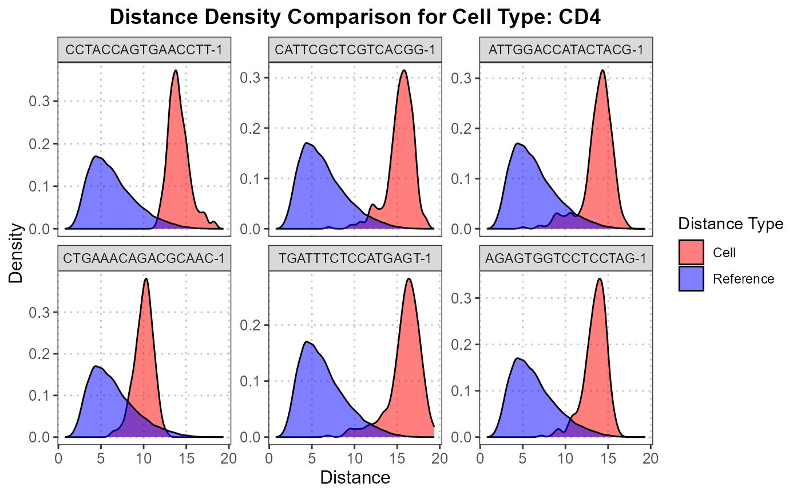
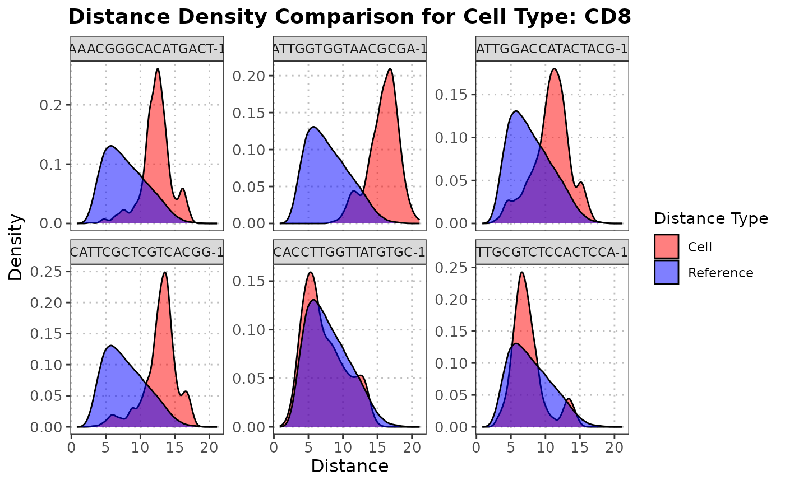

Compute Cell Distances Between Reference and Query Data
Source:R/calculateCellDistances.R, R/plot.calculateCellDistancesObject.R
calculateCellDistances.RdThis function computes the distances within the reference dataset and the distances from each query cell to all reference cells for each cell type. It uses PCA for dimensionality reduction and Euclidean distance for distance calculation.
The S3 plot method plots the density functions for the reference data and the distances from a specified query cells to all reference cell within a specified cell type.
Usage
calculateCellDistances(
query_data,
reference_data,
query_cell_type_col,
ref_cell_type_col,
cell_types = NULL,
pc_subset = 1:5,
assay_name = "logcounts",
max_cells_query = 5000,
max_cells_ref = 5000
)
# S3 method for class 'calculateCellDistancesObject'
plot(x, ref_cell_type, cell_names, ...)Arguments
- query_data
A
SingleCellExperimentobject containing numeric expression matrix for the query cells.- reference_data
A
SingleCellExperimentobject containing numeric expression matrix for the reference cells.- query_cell_type_col
The column name in the
colDataofquery_datathat identifies the cell types.- ref_cell_type_col
The column name in the
colDataofreference_datathat identifies the cell types.- cell_types
A character vector specifying the cell types to include in the plot. If NULL, all cell types are included.
- pc_subset
A numeric vector specifying which principal components to include in the plot. Default 1:5.
- assay_name
Name of the assay on which to perform computations. Default is "logcounts".
- max_cells_query
Maximum number of query cells to retain after cell type filtering. If NULL, no downsampling of query cells is performed. Default is 5000.
- max_cells_ref
Maximum number of reference cells to retain after cell type filtering. If NULL, no downsampling of reference cells is performed. Default is 5000.
- x
A list containing the distance data computed by
calculatecellDistances.- ref_cell_type
A string specifying the reference cell type.
- cell_names
A string specifying the query cell name for which to plot the distances.
- ...
Additional arguments passed to the plotting function.
Value
A list containing distance data for each cell type. Each entry in the list contains:
- ref_distances
A vector of all pairwise distances within the reference subset for the cell type.
- query_to_ref_distances
A matrix of distances from each query cell to all reference cells for the cell type.
The S3 plot method returns a ggplot density plot comparing the reference distances and the distances from the specified cell to the reference cells.
Details
The function first performs PCA on the reference dataset and projects the query dataset onto the same PCA space. It then computes pairwise Euclidean distances within the reference dataset for each cell type, as well as distances from each query cell to all reference cells of a particular cell type. The results are stored in a list, with one entry per cell type.
The S3 plot method first checks if the specified cell type and cell names are present in the object. If the
specified cell type or cell name is not found, an error is thrown. It then extracts the distances within the reference dataset
and the distances from the specified query cell to the reference cells The function creates a density plot using ggplot2
to compare the distance distributions. The density plot will show two distributions: one for the pairwise distances within the
reference dataset and one for the distances from the specified query cell to each reference cell. These distributions are
plotted in different colors to visually assess how similar the query cell is to the reference cells of the specified cell type.
Author
Anthony Christidis, anthony-alexander_christidis@hms.harvard.edu
Examples
# Load data
data("reference_data")
data("query_data")
# Plot the PC data
distance_data <- calculateCellDistances(query_data = query_data,
reference_data = reference_data,
query_cell_type_col = "SingleR_annotation",
ref_cell_type_col = "expert_annotation",
pc_subset = 1:10)
# Identify outliers for CD4
cd4_anomalies <- detectAnomaly(reference_data = reference_data,
query_data = query_data,
query_cell_type_col = "SingleR_annotation",
ref_cell_type_col = "expert_annotation",
pc_subset = 1:10,
n_tree = 500,
anomaly_threshold = 0.5)
cd4_top6_anomalies <- names(sort(cd4_anomalies$CD4$query_anomaly_scores, decreasing = TRUE)[1:6])
# Plot the densities of the distances
plot(distance_data, ref_cell_type = "CD4", cell_names = cd4_top6_anomalies)

plot(distance_data, ref_cell_type = "CD8", cell_names = cd4_top6_anomalies)
